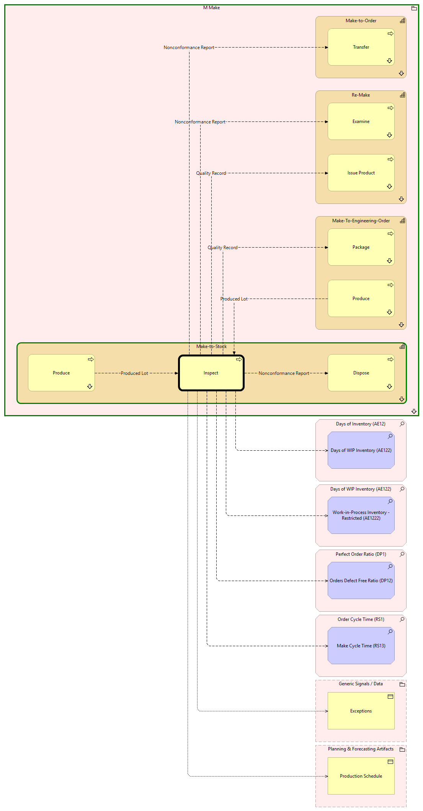

Inspect - Context
(
)

generated_by
build_archi_xml.py::gen_proc_node_context_view
generator_path
pedro/capabilities/build_archi_xml_assign/build_archi_xml_assign.py
run_at
2026-10-19T21:04:17
view_type
process_context
M Make
Re-Make
Issue Product
Issue Product - Context
Examine
Examine - Context
Re-Make - Processes
Make-To-Engineering-Order
Package
Package - Context
Produce
Produce - Context
Make-To-Engineering-Order - Processes
Make-to-Order
Transfer
Transfer - Context
Make-to-Order - Processes
Make-to-Stock
Inspect
Produce
Produce - Context
Dispose
Dispose - Context
Make-to-Stock - Processes
M Make - Processes
Days of Inventory (AE12)
Days of WIP Inventory (AE122)
Days of WIP Inventory (AE122)
Work-in-Process Inventory - Restricted (AE1222)
Perfect Order Ratio (DP1)
Orders Defect Free Ratio (DP12)
Order Cycle Time (RS1)
Make Cycle Time (RS13)
Generic Signals / Data
Exceptions
Planning & Forecasting Artifacts
Production Schedule
Produced Lot
Produce
Inspect
Nonconformance Report
Inspect
Dispose
Quality Record
Inspect
Package
Nonconformance Report
Inspect
Transfer
Nonconformance Report
Inspect
Examine
Quality Record
Inspect
Issue Product
Inspect
Days of WIP Inventory (AE122)
Inspect
Work-in-Process Inventory - Restricted (AE1222)
Inspect
Orders Defect Free Ratio (DP12)
Inspect
Make Cycle Time (RS13)
Inspect
Exceptions
Inspect
Production Schedule
Produced Lot
Produce
Inspect